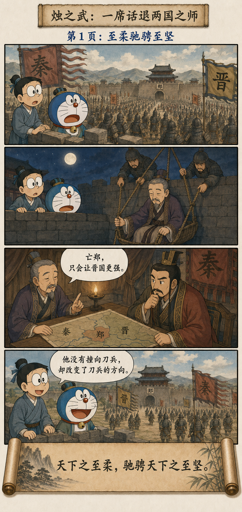
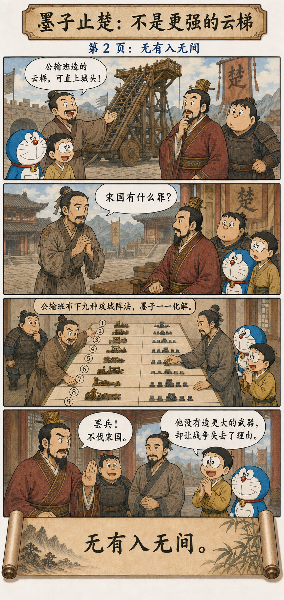
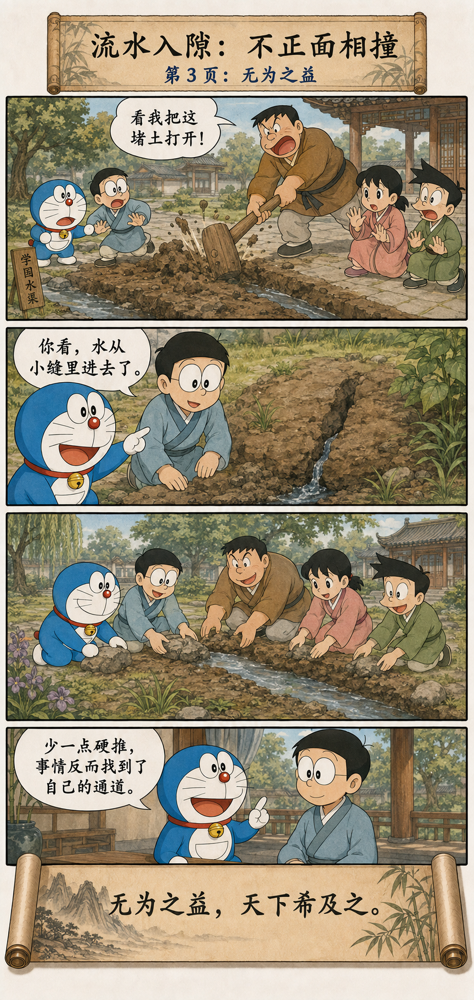

无形之物，能进入没有缝隙的地方
The Formless Enters Where No Gap Appears
天下之至柔，驰骋天下之至坚。
无有入无间。
吾是以知无为之有益。
不言之教，无为之益，
天下希及之。
The softest thing under heaven moves freely through the hardest. What has no fixed form enters where there seems to be no gap. From this I know the benefit of non-coercive action. Teaching without words and the benefit of non-forcing are rarely attained under heaven.
真正高明的力量，会先寻找结构
Skillful Power First Looks for Structure
坚硬的东西擅长承受正面压力，却未必能封住每一条缝隙。水没有固定形状，语言没有刀锋，关系也摸不着；它们却可能进入武力无法进入的地方，改变决定、联盟和行动路径。
Hard things withstand direct pressure well, yet may not seal every opening. Water has no fixed shape, language has no blade, and relationships cannot be touched; still, they can enter places force cannot and alter decisions, alliances, and paths of action.
“无为”在这里不是放弃行动，而是不把全部能力压缩成“推得更用力”。先看清力量怎样连接、目标为何成立、哪里可以转向，再用最小动作改变整个局面。
Here, non-forcing is not abandoning action. It refuses to reduce all ability to pushing harder. See how forces connect, why a goal stands, and where direction can change; then use the smallest action that transforms the whole situation.
一句话、一场演示、一线流水
A Conversation, a Demonstration, and a Thread of Water



一席话退秦师：改变对方的计算
Zhu Zhiwu: Change the Other Side’s Calculation
《左传》写秦、晋围郑，郑国没有能力在正面战场同时击败两国。烛之武夜里出城见秦穆公，不求秦国怜悯，而是指出：灭郑以后土地邻晋而不邻秦，真正扩张的是晋国；保留郑国，反而可作秦国东道之主。
The Zuo Commentary tells how Qin and Jin besieged Zheng, which could not defeat both powers head-on. Zhu Zhiwu left the city at night to meet Duke Mu of Qin. He did not ask for pity; he showed that Jin, not distant Qin, would gain from Zheng’s destruction, while a surviving Zheng could serve Qin in the east.
他没有比刀更硬，而是进入了联盟内部的缝隙：秦、晋目标并不完全相同。几句话改变秦国的利益判断，庞大的军事结构随之松动。这就是“无有入无间”。
He was not harder than the sword. He entered a seam inside the alliance: Qin and Jin did not share identical interests. A few sentences changed Qin’s calculation, and the great military structure loosened. This is the formless entering where no gap appears.
公输盘九攻，墨子九拒
Mozi: Nine Attacks, Nine Defenses
《墨子·公输》记楚国准备以云梯攻宋，墨子走了十日十夜赶到楚国。他先追问攻宋的正当性，又与公输盘以木片演示攻守。公输盘九次变换攻城方法，墨子九次化解。
In “Gongshu,” Mozi walks ten days and nights to Chu after learning of a planned cloud-ladder attack on Song. He first questions the justice of the war, then stages a model contest of attack and defense with Gongshu Pan. Gongshu changes methods nine times; Mozi answers all nine.
墨子的“柔”不是嘴上劝善，也不是毫无准备的和平愿望。他把道义、技术和已部署的守城能力放在一起，使楚王看见战争既无理又难胜。柔之所以能胜坚，是因为它有判断，也有后手。
Mozi’s softness is neither moral pleading nor an unprepared wish for peace. He combines ethical argument, technical mastery, and defenses already arranged in Song, allowing the king to see that the war is both unjust and difficult to win. Softness moves through hardness because it possesses judgment and preparation.
水不和石头比赛谁更硬
Water Does Not Compete with Stone in Hardness
水遇到石头会绕行，遇到土缝会渗入，遇到低处会汇集。它看起来一直在退让，却没有忘记自己的方向。久而久之，坚硬的地形反而被水重新写过。
Water bends around stone, seeps into soil, and gathers in low places. It appears constantly to yield, yet never forgets its direction. Over time, the hard terrain is rewritten by water.
这不是把忍耐本身当美德，而是把目标放在姿态之前。若绕开一块石头能让水抵达田地，就不必为了证明勇敢而撞在石头上。
This does not make endurance a virtue in itself. It places purpose before posture. If flowing around a stone carries water to the field, there is no need to crash into it merely to prove courage.
转向、进入、让对方自己改变
Redirect, Enter, and Let Change Arise
有些教育，不靠把答案喊得更响
Some Teaching Does Not Need Louder Answers
命令可以迅速制造服从，却未必制造理解。真正有效的教导，常把条件安排好，让人亲眼看见因果，并在实践中形成自己的判断。老师少说一句，学生不一定少学；也可能第一次开始思考。
Commands can quickly produce obedience without understanding. Effective teaching often arranges conditions so that people see consequences and form judgment through practice. When a teacher says one sentence less, a student may not learn less; the student may begin thinking for the first time.
柔不是一味退让，更不是取消边界
Softness Is Neither Endless Yielding nor the Erasure of Boundaries
烛之武有清楚的国家利益，墨子有明确的是非立场，流水也始终向低处与远方运动。柔的共同点不是没有原则，而是不把原则等同于僵硬姿态。
Zhu Zhiwu had clear national interests, Mozi a clear moral position, and water a steady movement toward lower and farther places. Their softness is not a lack of principle; it is the refusal to equate principle with rigid posture.
若一段关系要求你永远让步、不能说不、不能退出，那不是“至柔”，而是单向消耗。真正的柔保留选择，能进也能退，能绕行也能在必要处设下边界。
If a relationship demands that you always yield, never refuse, and never leave, that is not supreme softness but one-way depletion. Genuine softness preserves choice: it can enter or withdraw, flow around or establish a boundary when needed.
别急着增加力量，先看看力量往哪里走
Before Adding Force, See Where Force Is Going
第四十三章把行动从“更用力”里解放出来。真正的能力，不只是拥有多大力量，也包括发现缝隙、改变关系、选择时机，让庞大的结构沿着新的方向自行移动。
Chapter 43 frees action from the single command to push harder. Ability lies not only in the amount of force possessed, but in seeing openings, changing relations, choosing time, and allowing a great structure to move along a new course.
不与坚硬比赛坚硬，
也能让坚硬改变方向。
Do not compete with hardness in being hard; you may still change its direction.
原典与故事出处
Primary Texts and Story Sources
《道德经》第四十三章 · 《左传·烛之武退秦师》 · 《墨子·公输》
Chapter 43 of the Daodejing, the Zuo Commentary account of Zhu Zhiwu, and Mozi’s “Gongshu.”